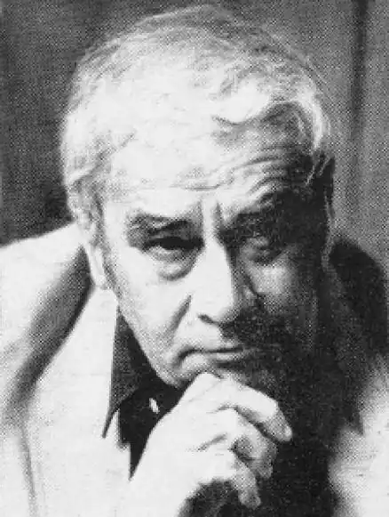
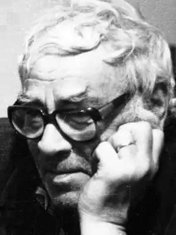

Миха Квлівідзе (груз. მიხეილ ქვლივიძე)— відомий грузинський поет. Народився 22 червня 1925 року в Тбілісі. Саме його вірші лягли в основу популярної пісні композитора Нуну Дугашвілі "Грузинська земля". Значну частину свого життя, понад 30 років, поет прожив в Москві. Раніше — смерть матері, арешт в Тбілісі батька (як "ворога народу"), загибель брата на війні, відсутність власного даху над головою змусили його на початку 50-х покинути батьківщину. У Москві Миша, Міхо (так його зазвичай звуть в Грузії) працював у Спілці письменників СРСР, друкувався в столичних журналах і видавництвах, його переводили чудові російські поети того часу.
Миха Квлівідзе: Я був молодий поет, в Москві мене друкували навіть ті, які мене ненавидили, бо дуже часто видавці вважали це національною специфікою, то, що було соціальної специфікою. Я не можу сказати, що я був щасливий. Добре я жив, в квартирі жив окремій або в готелі, або де, я весь час думав про мою батьківщину, про мову, про людей, про Тбілісі — дивовижне місто, де у мене не було взагалі квартири. Я фізично там існував, мене любили і ленінградці, мої друзі Сережа Давидов, Булат. Булат був чудовою людиною. Я не можу пробачити моїм співвітчизникам, коли вони йому дорікають в тому, що він не знає грузинського. Батька його розстріляли, мати посадили, заборонили жити на батьківщині, він жив в Калузі. Він мені подарував кращу свою пісню "Виноградну кісточку в теплу землю зарою ...".
В американському видавництві написано: "Міші Квлівідзе". Часто, дуже часто у своєму житті Миша Квлівідзе стикався з людською несправедливістю і підлістю, часом поняття дружби і ненависті, вірності і зради змішувалися в складний, важко розплутуваний клубок. Особливо небезпечною була зрада, що здійснюється нібито заради високої ідеі. Не дтвно, що саме ця тема лягла в основу одного з найвідоміших віршів Квлівідзе "Монолог Іуди".